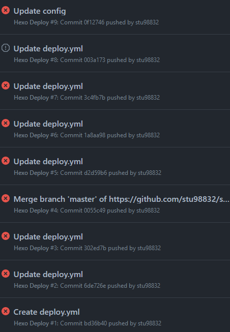

第一篇用 Github Action 部屬的文章
近期把 hexo 的 source code 放到 github 上託管
以防哪一天不小心弄丟了，復原很麻煩
但是這樣我都要進行一些例行公事
hexo clean |
用起來也挺麻煩的
所以我就開始使用 Github Actions 來進行自動部屬了
花了一些時間才弄好
部屬的歷程
在 hexo 的官方文件上有 Github Actions 的部屬步驟
但是我並不想 source code 做公開，於是我放棄了這個作法
最後還是改用原本的一鍵部屬
但是如果要從 Workflow 上的虛擬機來上傳到 Github page 的話
也要有能夠存取該專案的權限
因此一開始我想說使用 Personal Access Token 應該就可以了
然後就 …

撇除一開始的設置不完全跟 config 還沒搭配好的情況
後面的錯誤都是我一直在找沒辦法 push 的原因…
一直出現 username 錯誤
最後才從這篇找到了解答：
沒想到 Workflow 上竟然沒辦法使用 http 做部屬…
於是就按照教程加了 SSH Key 上去
最後終於部屬成功 QwQ
結語
看著這麼多個失敗的 Workflow
真的會懷疑人生…
感覺該有的都有了，怎麼會失敗呢 OuO
不過還好現在免費方案可以有 2000 Actions/月的扣打給私有 repo 用
每一次部屬也才 30 多秒而已，可以讓我試錯至少 3000次 (?)
可以不斷的試錯，也不用擔心很快就把扣打用光
順便藉著這次的自動化部屬體驗
增加一點經驗